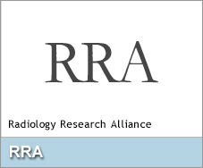

An educational resource developed by the Committee on Data Science & AI of the AAR/RRA to help trainees navigate the integration of AI into radiology practice.

AAR/RRA Committee on Data Science & AI
| Name | Role | Institution / Position |
|---|---|---|
| Flo Doo | Chair | Univ. of Maryland Institute for Health Computing — Assistant Prof & Co-Lead of AI-Enabled Medical Imaging, Center for Applied AI (CA2i) |
| Katherine Andriole, PhD | Member, TBD | UCLA (David Geffen School of Medicine) — Associate Dean for Health AI Strategy and Innovation; Director, UCLA Center for AI and SMART Health; Professor of Radiological Sciences |
| Peter Chang, MD | Member, TBD | UC Irvine — Co-Director, Center for AI in Diagnostic Medicine |
| Lars Grimm, MD, MHS | Member, TBD | Duke University — Associate Professor of Radiology |
| Marta Heilbrun, MD | Member, TBD | Intermountain Healthcare — Associate Medical Director, Imaging Services Quality & Patient Safety |
| Elizabeth Krupinski, PhD | Member, TBD | Emory University — Vice Chair for Research, Radiology |
| Michail Klontzas, MD, PhD International member; EuSoMII leader | Member, TBD | University of Crete (School of Medicine, Dept. of Radiology); also affiliated with Karolinska Institute |
| Raisa Amiruddin, MBBS Trainee member; upcoming resident | Member, TBD | Children’s Hospital of Philadelphia (CHOP) Research Institute — Radiology Research Scholar, Global Radiology Outreach and Education |
| Shinjer Li Trainee member; medical student, M2 | Member, TBD | Eastern Virginia Medical School — Medical Student (Class of 2029) |
| Nadja Kadom, MD | Observing / Guest | Emory University / CHOA — Director of Pediatric Neuroradiology (President of AAR RRA) |